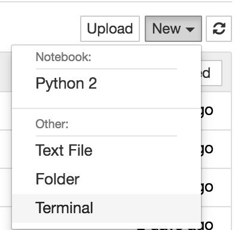
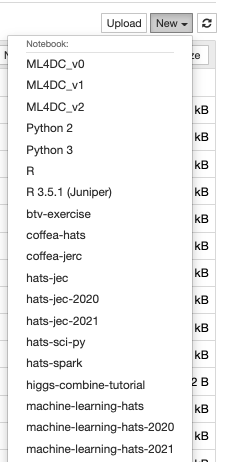

Vanderbilt JupyterHub#
1. Sign-in#
Point your browser to:
https://jupyter.accre.vanderbilt.edu/
If this is the first time using this JupyterHub, you should see:

Click the “Sign in with Jupyter ACCRE” button. On the following page, select CERN as your identity provider and click the “Log On” button. Then, enter your CERN credentials or use your CERN grid certificate to autheticate. Click “Spawn” to start a “Default ACCRE Image v5” image with “8 Cores, 8 GB RAM, 1 day timeout.”
2. Download repository#
Now you should see the JupyterHub home directory. Click on “New” then “Terminal” in the top right to launch a new terminal.

To download the tutorials, type
git clone https://github.com/FNALLPC/machine-learning-hats
Now, in your directory tab, there should be a new directory called machine-learning-hats.
All of the tutorials and exercises are inside machine-learning-hats/machine-learning-hats.
3. Setup libraries#
Start by clicking on setup-libraries.ipynb and running it.
Important
Please note that the first cell may take up to 20 minutes to run.
Now close this notebook by clicking on File->Close and Halt. Click the “New” button again. You should see a new kernal called machine-learning-hats.
If you do not, refresh the page and look again.

Notes for working on ACCRE#
Please remember to close and halt your notebooks when you’re done with them. While it’s possible to have multiple notebooks open, this can sometimes cause issues with a lack of memory and kernels becoming unstable. The best procatice is to close the notebooks you aren’t using. The notebook symbol will be green while it is in use and gray when it is shutdown.
Remember to shutdown your server when your are done using it. Go to
Control Panel --> Stop My Serverwhen you are completely finished.
If someone updates the notebooks after it’ve clones the repository, how do I get they updates?#
In this case you will want to open a terminal, just as you did when you first cloned the repository. Move (cd) to the repository directory if not already there. Then do git pull origin master. This will pull the latest changes from GitHub. If you’ve already made edits to a notebook which will be updated, those changes will be conflict. You may want to stash those changes or copy your modified notebook.
To revert the changes made to all of your notebooks you can use the command:
git checkout .
If you would like to save your changes first, you can copy your modified notebook to a new name and then run the checkout command.
Alternatively, to stash your un-staged changes, use the command:
git stash
You can then return those changes with the command:
git stash pop
Be aware that you may have conflicts that need to be fixed before the notebook can be run again.